Lễ khai giảng năm học mới 2021 - 2022 đặc biệt
Hòa chung trong không khí tưng bừng, phấn khởi của giáo viên và học sinh cả nước đón chào ngày khai giảng, đúng 7 giờ sáng ngày 5 tháng 9 năm 2021, thầy và trò trường THCS Trọng Quan hân hoan, long trọng tổ chức lễ Khai giảng năm học mới: Năm học 2021 - 2022.
Do ảnh hưởng của dịch Covid-19, toàn thể cán bộ giáo viên nhân viên, phụ huynh học sinh theo dõi phần Lễ của Ngày Khai giảng được truyền hình trực tiếp trên phần mềm Zoom, điểm cầu chính được đặt tại phòng hội đồng nhà trường và 11 điểm cầu khác đặt tại các lớp. Dù được tổ chức trực tuyến nhưng không khí của buổi Lễ vẫn hết sức long trọng, và tưng bừng.
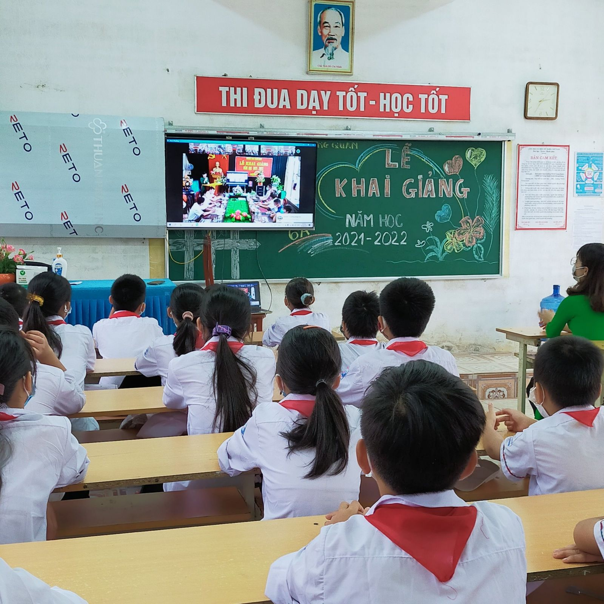
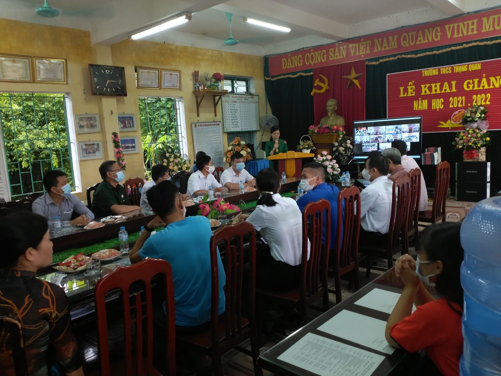
Chương trình được bắt đầu với phần nghi lễ trang trọng nhất : Chào cờ, tuyên bố lý do, giới thiệu đại biểu. Trong lễ khai giảng, nhà trường rất vinh dự được đón tiếp các vị đại biểu đại diện Đảng ủy, Hội đồng nhân dân, Ủy ban nhân dân và các ban ngành đoàn thể trong xã, Ban đại diện phụ huynh học sinh nhà trường và các lớp, đại diện các cơ quan doanh nghiệp: Công ty xây dựng Thành Vinh, nhà giáo Lại Hữu Miễn đã về dự. Về phía Nhà trường có: Ban giám hiệu, cùng tập thể cán bộ, giáo viên và toàn thể học sinh của nhà trường.
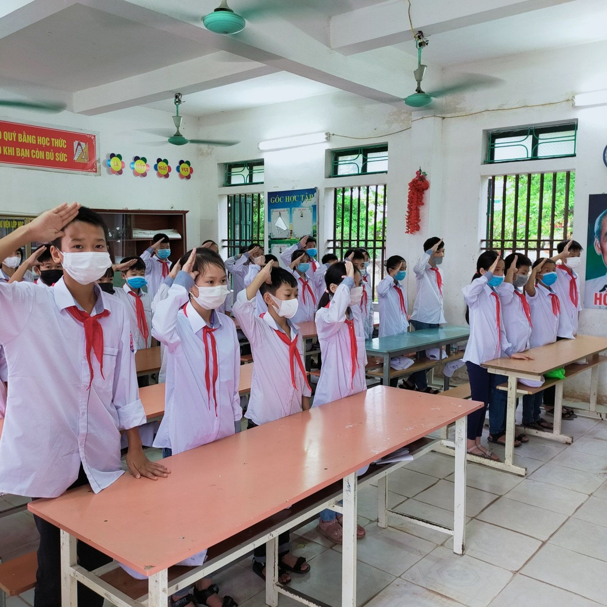
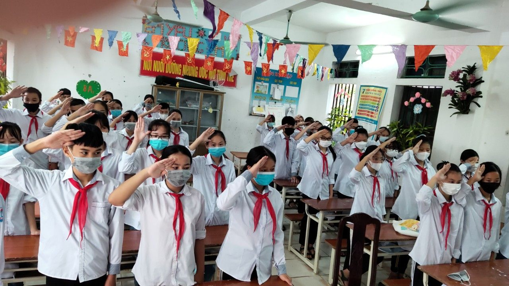
Nghi thức chào cờ diễn ra trong lớp hết sức trang nghiêm
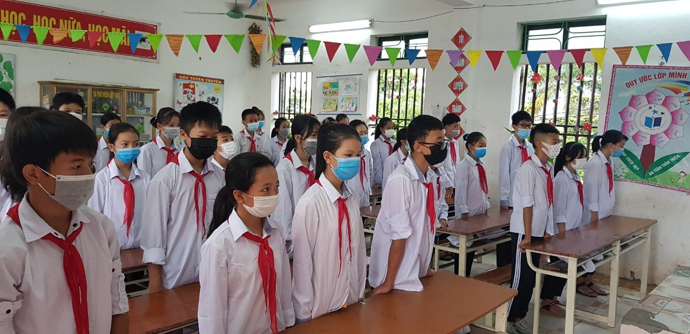
Học sinh các lớp nghiêm túc lắng nghe thư của chủ tịch nước được Đ/C Nguyễn Thị Phương Thủy đọc tại điểm cầu chính
Nghi thức quan trọng và ý nghĩa nhất cũng đã tới, đó là học sinh toàn trường được lắng nghe tiếng trống khai trường. Cô Nguyễn Thị Phương Thủy – Hiệu trưởng nhà trường - đã tuyên bố lí do và dạo lên hồi trống mở đầu năm học mới. Tiếng trống trường rộn rã, tưng bừng mà đầy thân thương như đang giục giã, mời gọi giáo viên và học sinh toàn trường hãy bước vào năm học mới với tất cả sự nỗ lực, tự tin để đạt được những thành tích cao trong công tác dạy và học tập.
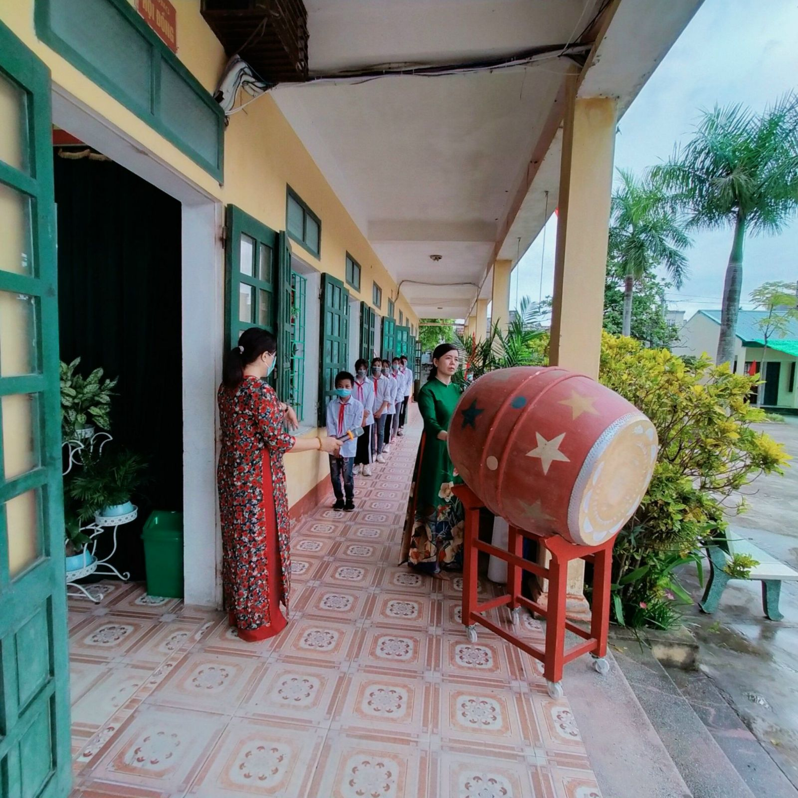
Cô Nguyễn Thị Phương Thủy - Bí thư chi Bộ - Hiệu trưởng nhà trường dạo lên hồi trống báo hiệu năm học mới bắt đầu
Trong những năm qua trường THCS Trọng Quan vẫn từng bước đi lên, khẳng định vị thế của mình trong ngành giáo dục huyện nhà. Năm học 2020 - 2021 cả nước nói chung và trường THCS Trọng Quan nói riêng còn gặp nhiều khó khăn trong giảng dạy và học tập do dịch Covid 19 hoành hành. Nhưng bằng sự nỗ lực và kinh nghiệm trong dạy học online trong phần mềm Zoom thầy và trò trường THCS Trọng Quan đã có được những thành tích tốt. Trường đứng thứ 3 trong khối THCS của Huyện Đông Hưng. Để có được những thành tích đó có sự quan tâm, động viên kịp thời trong công tác chỉ đạo từ các cấp lãnh đạo Đảng, chính quyền địa phương đối với tập thể cán bộ, giáo viên trong nhà trường.
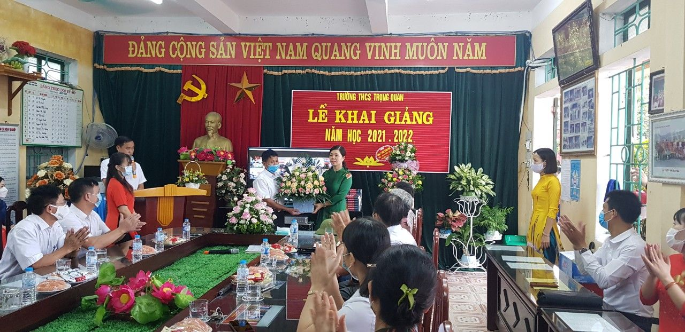
Các quý vị đại biểu đã tặng hoa chào mừng với dành những lời chúc tốt đẹp trong năm học 2021 -2022.
Trong ngày khai giảng của năm học mới, Ủy ban nhân dân xã Trọng Quan và các ban ngành đoàn thể trong xã, các doanh nghiệp địa phương đã dành tặng nhiều suất quà cho các em học sinh có hoàn cảnh khó khăn để mua sắm đồ dùng học tập, sách vở đến trường. Đặc biệt là công ty TNHH Chính Hưng (Đó là học sinh cũ của trường khóa 1996 - 2000). Công ty TNHH Chính Hưng đã trao 11 cuốn sách Đắc Nhân Tâm cho các lớp, 8 cuốn còn lại trao cho thư viện nhà trường.
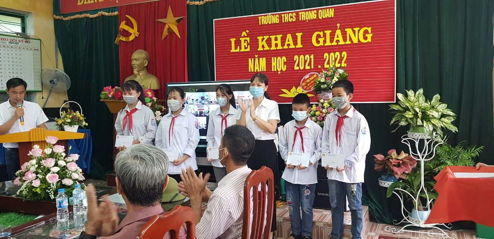
Chủ tịch hội khuyến học xã tặng quà các em có hoàn cảnh khó khăn
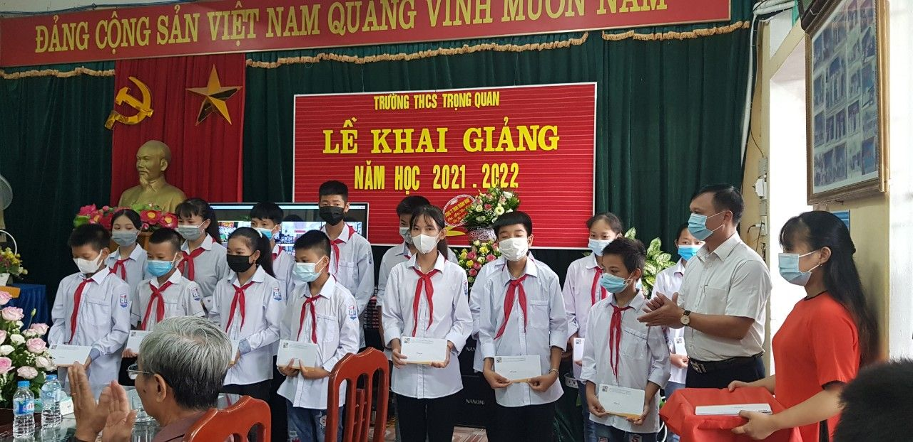
.jpg)
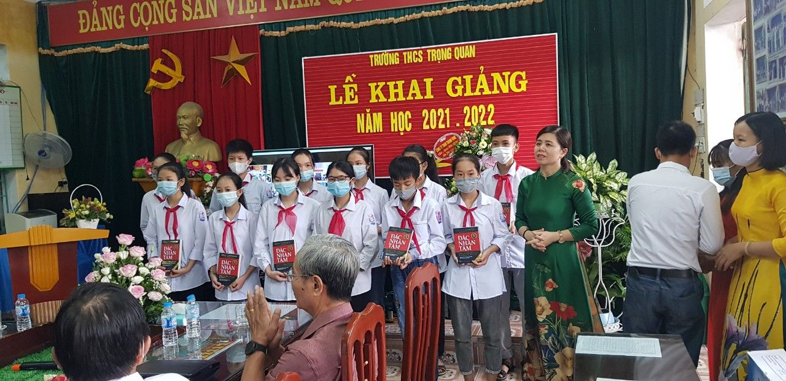
Công ty TNHH Chính Hưng dành tặng những suất quà vô cùng ý nghĩa cho học sinh các lớp
Lễ khai giảng năm học 2021 -2022 của thầy trò trường THCS Trọng Quan đã kết thúc thành công tốt đẹp trong niềm hân hoan, phấn khởi của thầy trò cũng như sự tin yêu của lãnh đạo và cha mẹ học sinh đối với nhà trường. Tập thể trường THCS Trọng Quan tự tin, sẵn sàng bước sang một năm học mới với những thử thách, thời cơ mới, thắng lợi mới...
Một số hình ảnh kỉ niệm năm học mới 2021 - 2022
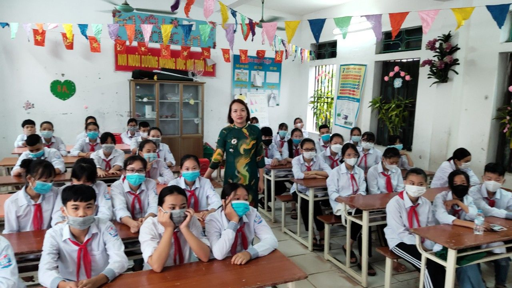